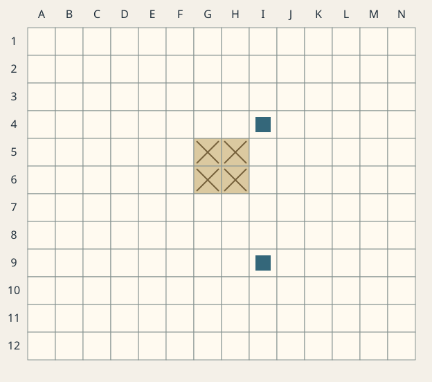

Одинаковые правила, разная история
Все карты совпадают с сеткой нативного пакета: 14 × 12, клетка — 5 футов. G5/H5/G6/H6 — трудная местность; I4/I9 — половинное укрытие. Остальные детали описания декоративны, пока ведущий не изменил поле штатно.
Расстановка и параметры
Герои по порядку: B3, B4, B5, B6, C3, C4, C5. Противники: L3, L4, L5, L6, M3. Используйте только нужное число фигур.
Для 3 / 4 / 5 / 6 / 7 игроков: 2 / 3 / 3 / 4 / 5 противников, здоровье каждого 12 / 14 / 16 / 18 / 20. Защита 12; скорость 20 футов; одна ближняя атака +3, 1d4+1 дробящего урона, досягаемость 5 футов.
Враги — простая поддерживаемая модель. Мирные решения и ограничения сцены описаны отдельно; ведущий подтверждает их результат. После первого раунда напомните пути переговоров или отступления. Встречи не запускаются автоматически.
Угольные задиры
Только если игроки и ведущий выбирают короткое столкновение: несколько самовольных угольных фигур сторонников громко требуют немедленного сожжения и преграждают свободный выход.
Цель и выходы
Провести желающих уйти к краю поля либо добиться, чтобы фигуры отступили. Свидетельства и поручение Веш доступны до встречи и после мирного исхода. Отход группы заканчивает столкновение без потери улик.
Позвать Веш, показать мандат или попросить каждую фигуру высказать требование по очереди. Они уступают проход без проверки после ясного отказа от немедленного приговора; их нетерпение не даёт доказательств.
Поведение противников
Небольшая ожившая угольная фигурка с неровной улыбкой; не представляет весь дом саламандр.
Фигуры подходят к ближайшему герою и используют только обычную ближнюю атаку. Не бьют лежащих, не хватают документы и не умеют поджигать знамя. При добровольной сдаче героев немедленно прекращают стычку; Веш освобождает проход.
Размер группы
3 игрока: 2 противника по 12 HP; 4: 3 по 14 HP; 5: 3 по 16 HP; 6: 4 по 18 HP; 7: 5 по 20 HP. У всех AC 12 и одна ближняя атака +3, урон 1d4+1. Не добавляйте способности, подкрепления и автоматические таймеры. Каждый герой может обсуждать отход вместо атаки.

↔ На узком экране прокрутите карту вбок. Полный размер доступен по ссылке ниже.

Поле 14×12: столбцы A–N, строки 1–12. Только G5, H5, G6, H6 — труднопроходимые клетки; только I4, I9 дают половинное укрытие. Герои занимают по числу игроков B3, B4, B5, B6, C3, C4, C5; противники — по числу L3, L4, L5, L6, M3. Все остальные предметы декоративны, дополнительных препятствий и укрытий нет. Изменение геометрии требует явного изменения поля ведущим. Угольный орнамент и керамические вазы декоративны.
Мотыльки у витрины
Только при согласии стола на необязательную встречу: свечные мотыльки собираются у переносного фонаря во время разрешённого осмотра. Бела заранее закрывает витрину, предмету не угрожает уничтожение.
Цель и выходы
Увести мотыльков от посетителей или выйти за край поля и дать Беле закрыть дверь. Осмотр возобновится после их ухода; победа не определяет допустимость доказательств.
Погасить переносной фонарь или передать его Беле, которая унесёт его через свободный выход. Мотыльки следуют за светом; проверка и специальное заклинание не нужны.
Поведение противников
Сказочный мотылёк размером с варежку, чьи крылья похожи на мягкие свечные лепестки.
Мотыльки приближаются к носителю обычного фонаря и при столкновении используют только ближнюю атаку. Никаких областей огня, ослепления или порчи вещей. Отказавшихся от столкновения посетителей не преследуют за край поля.
Размер группы
3 игрока: 2 противника по 12 HP; 4: 3 по 14 HP; 5: 3 по 16 HP; 6: 4 по 18 HP; 7: 5 по 20 HP. У всех AC 12 и одна ближняя атака +3, урон 1d4+1. Не добавляйте способности, подкрепления и автоматические таймеры. Каждый герой может обсуждать отход вместо атаки.
↔ На узком экране прокрутите карту вбок. Полный размер доступен по ссылке ниже.

Поле 14×12: столбцы A–N, строки 1–12. Только G5, H5, G6, H6 — труднопроходимые клетки; только I4, I9 дают половинное укрытие. Герои занимают по числу игроков B3, B4, B5, B6, C3, C4, C5; противники — по числу L3, L4, L5, L6, M3. Все остальные предметы декоративны, дополнительных препятствий и укрытий нет. Изменение геометрии требует явного изменения поля ведущим. Закрытая витрина, светильники и узоры пола декоративны.
Восковое возражение
Игроки добровольно выбирают учебную стычку вместо словесной разминки пятого вечера. Эйра заранее говорит, что упражнение не даёт преимущества в суде.
Цель и выходы
Дойти до любого края поля, согласованно остановить упражнение или победить учебные фигуры. Цель — заметить, кто остался без внимания; итоги не заменяют вопроса свидетелю.
Произнести «пауза», отойти к краю либо выбрать вместо боя обмен карточками с возражениями. Эйра выключает фигуры; все материалы слушания доступны независимо от упражнения.
Поведение противников
Подвижная учебная фигурка с мягким фартуком и нарисованными вопросительными бровями.
Спорщики по очереди подходят к разным героям, применяя только обычную ближнюю атаку. Учебный характер описания не меняет канонических HP и урона; ведущий останавливает бой по слову «пауза» до нежелательной травмы.
Размер группы
3 игрока: 2 противника по 12 HP; 4: 3 по 14 HP; 5: 3 по 16 HP; 6: 4 по 18 HP; 7: 5 по 20 HP. У всех AC 12 и одна ближняя атака +3, урон 1d4+1. Не добавляйте способности, подкрепления и автоматические таймеры. Каждый герой может обсуждать отход вместо атаки.
↔ На узком экране прокрутите карту вбок. Полный размер доступен по ссылке ниже.

Поле 14×12: столбцы A–N, строки 1–12. Только G5, H5, G6, H6 — труднопроходимые клетки; только I4, I9 дают половинное укрытие. Герои занимают по числу игроков B3, B4, B5, B6, C3, C4, C5; противники — по числу L3, L4, L5, L6, M3. Все остальные предметы декоративны, дополнительных препятствий и укрытий нет. Изменение геометрии требует явного изменения поля ведущим. Восковые кляксы вне названных трудных клеток и картонные кафедры декоративны.